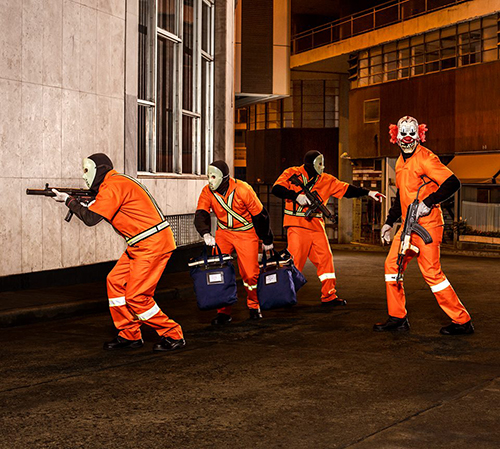

SOBREVIVENDO NO INFERNO RACIONAIS MC'S
Uma das principais obra do grupo formado em 1988 por Mano Brown, Edi Rock, Ice Blue e KL Jay.
Meu album preferido deles, obra relata os abusos autoritários de poder de uma considerável porcetagem policial, contra os negros e povos que reside em periferia, e as grandes dificuldades do cotdiano deles.
Aqui está as principais obras do grupo;
- Sobrevivendo no inferno
- Raio X Brasil
- Cores & Valores
- Nada Como Um dia Após o Outro Dia
Srevivendo no inferno

Sobrevivendo no Inferno se revela um manifesto político e social, que ressalta a dureza do cotidiano com que convive o negro residente na periferia ou advindo dela.
Raio X Brasil
É considerado como o disco que colocou o rap como um estilo mais conhecido no Brasil. Esse álbum é um dos mais vendidos no Brasil na categoria Rap/Hip-Hop, com mais de 200.000 cópias.

Cores & Valores
Voltando ao "problema" com a polícia. “A Praça”, também presente em Cores & Valores, é um relato sobre a confusão que aconteceu durante um show dos Racionais na Virada Cultura em 2007.
Nada Como Um dia Após o Outro Dia
Foi no seu retorno às ruas que os Racionais Mc’s se reajustaram ao novo tempo do mundo: uma periferia quebrada, moída a pau, cheia de necessidades a serem supridas, um apetite pelas novas tecnologias, por novos meios de vida, que marcaria em um de seus principais discos a forte impressão dos sonhos do continente negro que são as favelas e as cadeias.